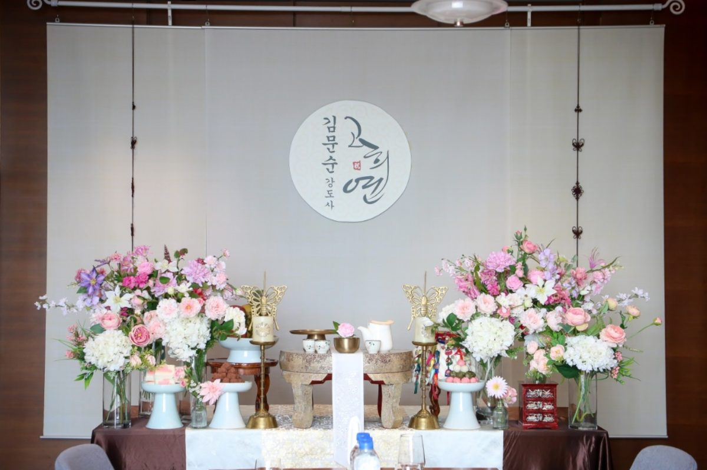

가족행사 준비에서 먼저 확인할 것
호텔이나 식당은 장소마다 외부 상차림 반입, 설치 가능 시간, 테이블 크기, 주차, 철수 규정이 다릅니다. 예약 전에 이 다섯 가지를 확인하는 것이 좋습니다.
파티후는 이렇게 준비합니다
공간 정보를 미리 공유해 주시면 행사 장소 조건에 맞춰 상차림과 진행 동선을 상담합니다.
예약 전 체크리스트
① 행사 날짜와 시작 시간 ② 행사 장소 ③ 예상 인원 ④ 상차림 설치 가능 시간 ⑤ 사진·사회 등 필요한 추가 구성을 확인해 주세요.
실제 파티후 장수연 현장

